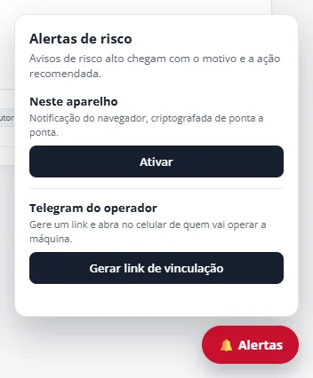

~1.700 linhas · 27 arquivos
📱 Alertas no celular do operador
- Web Push com criptografia de payload (RFC 8291,
aes128gcm) e assinatura VAPID implementadas direto sobrenode:crypto, sem bibliotecas externas. - Telegram com uma conversa individual por operador, vinculada por um código de uso único que expira em 15 minutos e um webhook autenticado.
- Silêncio inteligente: o alerta só é reenviado se a condição piorar ou persistir além do intervalo configurado.
- Canais independentes: se um canal falha, o outro entrega, e nenhuma falha de entrega bloqueia a ingestão de telemetria.
